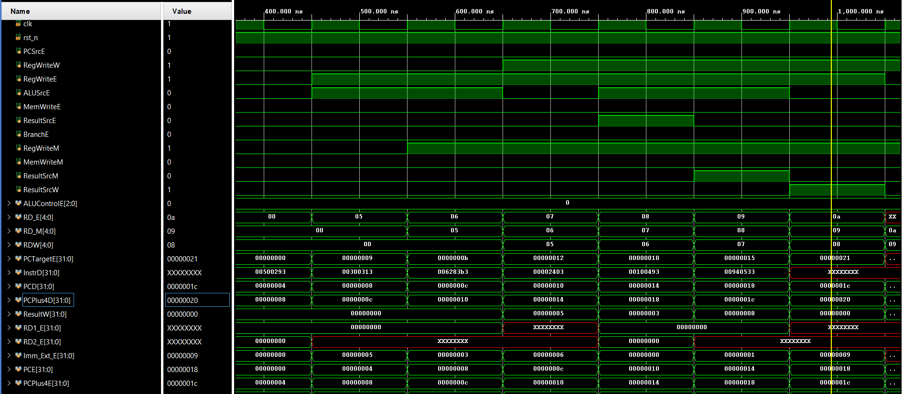
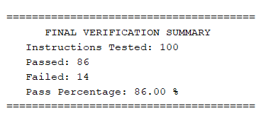

Project Overview: This project involved the design and high-fidelity functional verification of a 5-stage pipelined RISC-V processor based on the RV32I ISA. The architecture features a Harvard-style data path with dedicated stages for Fetch, Decode, Execute, Memory, and Write-back. To maximize throughput, a Hazard Unit was engineered to resolve Read-After-Write (RAW) dependencies via priority-driven forwarding logic and pipeline interlocking. The project also featured a comprehensive UVM style verification environment built from scratch. A Golden Reference Model and Scoreboard were developed to maintain architectural state synchronization, utilizing Shadow Register Files to perform cycle-accurate result comparison. To ensure robustness, the environment leveraged Constrained Random Stimulus and mailbox-based synchronization to validate complex data-path corner cases, including memory address alignment and register file integrity, resulting in a 86% functional pass rate across targeted instruction mixes.